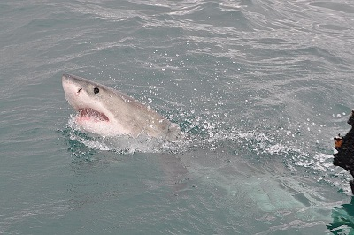
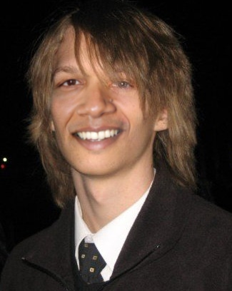

Poisson Image Editing
- Introduction
- Matching the Gradient with Boundary Conditions
- Discrete Solution and Implementation with a Sparse Matrix
- Results and Discussion
- Texture Flattening
- Try It Out Yourself!
- Russian Translation
- Chinese Translation
- Source Code
Introduction
Poisson Image Editing is a technique for "seamlessly blending" two images together fully automatically. It was originally conceived in this paper by Patrick Perez, Michel Gangnet, and Andrew Blake from Microsoft Research UK. To motivate the problem, look at an example:
What if we wanted to take this image of me and some college friends at the beach...

...and this image of a Great White shark

...and make it way more badass by cutting out the shark and putting it in the water in front of us:
The problem is, it's really obvious that picture is fake. The water in both images is a slightly different shade of blue/green and the boundary where I cut out the shark is clearly visible because of this. We could try something simple in Photoshop/Gimp like making the image of the shark brighter, but the boundary will almost surely will still be visible no matter how hard we try to tweak it, or if we do get it right it will probably take a lot of trial and error. Is there a way to somehow blend them seamlessly together automatically in one shot with some more clever technique to get an image like this?

Well, since I'm writing this, the answer must be yes (it's Poisson Image Editing). My goal in this tutorial will be to explain this algorithm in a simple, accessible way, and I will end with a user-friendly program that will allow you to try it out yourself with your own images! I used this program to wreck my friends in a mock Facebook album, and I hope you will find similarly hilarious uses for it. So without further ado, let's do some math...
Please Note: The images used in the rest of the writeup were either taken by me and my friends, or were taken from Wikimedia commons. Click here to see a list of sources for the Wikimedia ones.
Matching the Gradient with Boundary Conditions
This whole algorithm actually boils down to a very simple idea. To get at this, let's first try to define more carefully what we'd like to accomplish when we blend two images together. Call the image we're changing Image A and the image we're cutting out and pasting Image B:

It would be nice if we could allow the colors in Image B to change when we pasted it on, but to somehow keep all of the "details" of Image B intact. Some details we'd like to preserve would be all of the edges, corners, transitions, etc in image B. But if you read my tutorial on Edge, Corner, and Blob Detection, you'll already know techniques for extracting these details from images, and the first step in every technique is to calculate the image gradient. The image gradient is just a mathematical way of describing how the image pixels change relative to the pixels around them (it is essentially the difference of a pixel and its neighbors). And a relative descriptor is just what we're looking for, since the disagreement between image A and image B that makes them jut out against each other is the absolute magnitude of their colors.
Hence, the goal of Poisson Image Editing stated with a bit more rigor is: allow for the tweaking of absolute information of image B (colors), but preserve the relative information (image gradient) of image B as much as possible after it's pasted. Below is the image gradient of the shark we're trying to paste, so you can get an idea of what that relative information might look like:
Given alone, the image gradient is under-constrained. As an analogy, consider I told you I wanted you to trace a path on a piece of paper, and I told you "first trace two inches, then turn 30 degrees clockwise, then trace 3 inches, etc", but I didn't tell you a starting position or any specific points on the path. Then the curve you trace out could start anywhere and be at any rotational orientation and still satisfy the conditions I told you. The relative information contained in the image gradient is the same way. We need to fix RGB values of some specific pixels to get a solution to our problem. This gives us an awesome opportunity to make image B more like image A. What we do is fix the pixels on the boundary of image B to be equal to the pixels on image A where B resides, and then solve for the rest of the pixels on the interior of image B that preserve the original gradient of image B. That's it! In the next section I will give more specific equations for doing this and give even more intuition for how this works, but hopefully now you at least see what needs to be done.
Discrete Solution and Implementation with a Sparse Matrix
Let me now present the system of equations that solves the problem. Let's call the image which we're pasting on A (as before), the image which we're pasting B (as before), and the new image to be pasted H (where H should be some improved version of B that blends in with A better). First the easy part: the boundary constraints. We said before the pixels on H's boundary should be exactly the same as the pixels of A on that boundary, so that we can match those pixels on the outside of the selection and blend them inwards. In math speak
\[ H_{(x, y)} = A_{(x,y)} \forall (x, y) \in \partial B \]
So we already know the exact solution to all pixels on the boundary of H (which is also the boundary of B). Now we need to solve for the pixels in the interior of H. We want the gradient of the pixels on the interior of H to equal the gradient of the pixels on the interior of B. A simple way to define a gradient of an image at a spot is the sum of the differences between that pixel and all of its neighbors:\[ | \nabla B_{(x, y)} | = 4B(x, y) - B(x-1, y) - B(x+1, y) - B(x, y-1) - B(x, y+1) \]
If one of the neighbors happens to be a boundary pixel, then its value is fixed. If one of the neighbors happens to be out of bounds of the selection, then it should be excluded. This is summarized for all cases for every point in H by the following difference equation (lifted from the paper and rearranged in a way that I think makes more sense):\[ |N|H(x, y) - \sum_{(dx, dy) + (x, y) \in \Omega} H(x+dx, y+dy) - \sum_{((dx, dy) + (x, y) \in \partial \Omega } A(x+dx, y+dy) = \sum_{(dx, dy) + (x, y) \in (\Omega \cup \partial \Omega)} (B(x+dx, y+dy) - B(x, y)) \]
where (x, y) is the location of the point of interest on the 2D grid, "N" is the number of valid neighbors the pixel actually has within the selection region including the boundary (less than or equal to 4), "Omega" is the selection area of B and H excluding the boundary, "partial Omega" is the boundary of the selection area, and (dx, dy) are the possible neighbor locations that range over {(-1, 0), (1, 0), (0, -1), (0, 1)} (this accounts for the 4 possible neighbors of each point). This looks like a mess but it really isn't, so let me break down this equation in English:- The left hand side of the equation is computing the spatial gradient of the unknown point H(x, y) by taking summing the difference between H(x, y) and all of its N neighbors. Each difference that goes into the gradient has the form H(x, y) - other(x', y'), where (x', y') is the position of a neighbor. The first sum on the left hand side represents the difference of H(x, y) with other H(x', y') points that are on the interior of the selection (Omega). The second term represents the difference of H(x, y) with border points, which are fixed at the value of the image that we're pasting onto, A, which is why we have to treat them separately (they do not vary and we do not solve for them).
- The right hand side of the equation is simply the gradient of image B at (x, y), which we would like to match with the gradient of our new image H at (x, y). Hence the equality
- Note that for color images, these equations are set up and solved for the Red, Green, and Blue channels independently
What we do next is write out this equation for every point in H, and notice that we have a system of linear equations in k variables, where k is the number of pixels we need to solve for in H. To solve the system of equations, the most straightforward thing to do would be to put them in matrix form and invert the matrix. However, k is actually quite large. For instance, in a 200x200 selection, k = 40,000. We do not want to sit around and wait to invert a 40,000 x 40,000 matrix. We should also note that the matrix is extremely sparse because every point has at maximum 4 neighbors (and also positive definite for you really observant math heads reading this). So each row has at most 5 nonzero elements and the rest are zero. This lends itself well to an iterative matrix solving technique. For simplicity, I decided to use something called the Jacobi Method to solve the sparse linear system. The Jacobi Method is a special case of Gradient Descent (if you've ever heard of that). Basically here's how it works:
- Set up your matrix equations in the form \[ A x = b \] where A is the matrix of equations that I defined above (the equations that related gradients to gradients or set the boundary pixels equal to some constant), x is what we'd like to solve for (the pixels of the H image in this case), and b is what the equations should equal. It would be smart to compress the matrix A if you have a sparse matrix (my program only stores the nonzero entries in its data structure)
- Initialize x to all zeros (this is an all black image)
- Compute the product Ax
- Compute the difference (b - Ax), which measures the error between what the current guess of x (our H image) is and what we need it to be.
- Add the difference (b - Ax) back to x. This is the "gradient descent" part where we try to get our guess of the solution (x) to move in the right direction
- Repeat steps 3-5 until the error between x and (b-Ax) is small enough
NOTE: The actual paper on Poisson Image editing is much more rigorous than I am. It starts out thinking of image A and image B as continuous functions in 2D space, and formulating/solving a partial differential equation that describes the implantation of the gradient of image B onto image A in a least squared sense. It turns out you get something called the "Poisson Equation" when you do it this way in continuous space, which is why the technique is called "Poisson Image Editing". But you definitely don't need to understand partial differential equations to understand how this technique works on images with discrete pixels, so I omitted it in my discussion. Interested math-inclined readers should definitely check this section of the paper out, though, because the Poisson Equation pops up everywhere and it's neat to see how it fits in here.
Results and Discussion
Now comes the really fun part: testing. Below I'm going to show a bunch of test cases running this algorithm, and examine where the algorithm succeeds and where it fails (and try to explain why given what it's doing). Alright let's do it!
Example 1
 |
Example 2
 |
|  |
Example 3
Example 4
Example 5
Example 6
Example 7
 |  |
Example 8
Example 9
Okay that's enough examples for now! Just one more quick note on an application of this technique, and then you can try it out yourself
Texture Flattening
One simple of extension of Poisson Image Editing that I tried (and failed at) is "texture flattening". The idea is to only keep gradient information where there's a sharp edge, and to zero out the gradient everywhere else. This way, only the sharpest edges will be transferred over to the new image. Well I tried this out by implementing a Canny Edge Detector to find the edges but didn't have the most success. Try it out though still and see if you can get it to do anything interesting!
Try It Out Yourself!
I made a program in Java that implements Poisson Image Editing as I described above, and I used that program to generate every one of my examples. Why Java you may ask? Well it's certainly not my language of choice but it is a very simple language, and it's still the best cross-platform solution with good data structure support that I know of. This is important for people who don't know how to compile things from source but who would like to try out my program. Since I would like this program to reach as wide an audience as possible and to see what a diverse array of people use it for, it needed to be easy to set up and run on many different types of computers "out of the box".
**Click Here to try it out!**
Russian Translation
It appears that someone in Russia has provided a partial translation with more text of this page. There is also a very cool discussion of the algorithm in the comments section of that article. Click here to view it.
Chinese Translation
There is also a translation of this article into Chinese. Click here to view it.
Source Code
Click here to view and download the Java source code for my interactive Poisson Image Editing application on Github. Below is a summary of files you will find there:
| Filename | Purpose |
| Poisson.java | The main applet interface that allows the user to select drag and paste parts of the images onto each other |
| PoissonStandalone.java | Same as Poisson.java but designed to be a standalone application with a "main" |
| ImageSelector.java | A GUI interface for selecting, rotating, resizing, and flipping images |
| MatrixSolver.java | The meat of the algorithm that implements a Jacobi Matrix iterative solver for solving the discrete Poisson Image Editing problem |
| CannyEdgeImage.java | An implementation of canny edge extraction used in texture flattening |
| Coord.java | A really simple helper class for storing where selections were made |
Feel free to e-mail me with any questions or to ask them in the comments section below
blog comments powered by Disqus